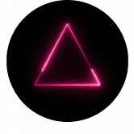 Traverse 什么是穿越？ 什么是穿越？穿越的意义何在？ Traverse 是 Avalanche 网络上目前第一个基于 VERSE 代币的多链去中心化储备货币协议。每个 VERSE 代币都由 Traverse 库中的一篮子资产（例如，
TRDG Track 什么是 TRDG 轨道？ 5% 税（2.5% 烧掉 // 2.5% 返还给持有人） ✨致所有新的缓步动物✨ 那问 $TRDG 是关于什么的，我们为你写了这个！ 我们是通货紧缩的代币，具有最佳
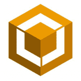 TreasureBlox 什么是TreasureBlox？ TreasureBlox 是世界上第一个加密和现实世界的寻宝游戏。玩家使用 BLOX 进入寻宝游戏，您可以在其中找到线索并解决谜语以赢得宝藏。
TreasureKey 什么是宝藏钥匙？ TreasureKey 是 Binance 智能链上排名第一的赌博 Dapp，包含多种游戏，包括 宝藏钥匙 TreasureKey 是直接在 BSC 网络上运行的去中心化、去信任和不可变区块链游戏的
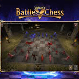 Vulcan's Battle Chess Vulcan’s Battle chess 是一款使用 VulcanVerse 中的 Vulcanites 的在线多人国际象棋游戏。玩速度国际象棋以获得参加当日 $LAVA 奖池的资格。管理 PYR、LAVA、MATIC 和 ETH 等多种加密货币
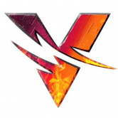 VulcanVerse VulcanVerse 是一款开放世界的大型多人在线角色扮演游戏 (MMORPG)，由格斗奇幻作家编写绝杀。在 VulcanVerse 中，玩家可以真正拥有不可替代代币 (NFT) 形式的资产。在 VulcanVerse 中
WagmiDAO WagmiDAO 是第一个多链储备支持的去中心化交易所（RDEX）。它专注于不断增长自己的国库和原生代币的价值。 WagmiDAO 的整个理念受到了一些最著名的现代 DeFi 协议的启
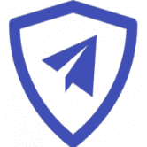 Waitabit Waitabit 是第一个基于堆栈连接和 gaia 存储的去中心化系统。它可以帮助初创公司启动他们的早期测试程序，并帮助安全地收集/存储用户信息。 Waitabit 让您能够使用简单的
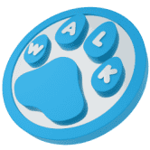 Walk Dogs Walk Dogs 是一款内置 Game-Fi 元素的 Move-To-Earn Web3 应用程序，它结合了我们生活中很重要的两项活动：步行和赚钱。 Walk Dogs 协议允许用户在使用真实和虚拟 NFT 宠物的每一步中赚取 $WLD 代
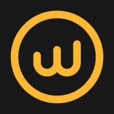 Walken Walken 平台体现了将数千名新用户加入 DeFi 的机会。 Walken 是一个游戏和练习，由一个拥有超过 5000 万应用商店下载量和 1000 万美元年收入的团队构建的移动应用程序。 用户通
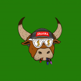 Wall St Bulls Wall Street Bulls 是以太坊区块链上 10,000 个独特 NFT 的集合。受华尔街堕落文化的启发，华尔街公牛队制定了一个路线图，其中包含一些最独特的实用程序。您的牛市将成为即
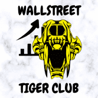 Wall Street Tiger Club Wallstreet Tiger Club 是 NFT 集合的独特热门华尔街老虎，他们已经入侵了 NFT 世界，他们永远生活在 Polygon 区块链上。准备好与我们一起获得财务自由。一个由制造商、开发商和贸易
Wallkanda Polygon 街头艺术是 21 世纪的主要艺术运动，但街头艺术家正在努力以他们的艺术为生。他们没有像 Instagram 或 Pinterest 那样被困在 web2 维世界中的其他数字工具。 我们通过为艺术家提
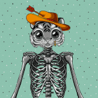 Wallstreet Tiger Club Wallstreet Tiger Club 是 NFT 集合的独特热门华尔街老虎，他们已经入侵了 NFT 世界，他们永远生活在 Polygon 区块链上。准备好与我们一起获得财务自由。Mittaria 正在推出 The
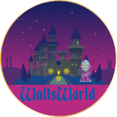 WaltsWorld xxxxxxxxxx WaltsWorld 是一个旨在成为 DEFI 万物中心的生态系统。我们使用 DEFI 3.0 并投资我们的资金来赚取收益和利润，这些收益和利润用于回购、营销和开发。我们与其他平台的不
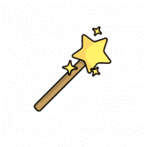 Wand Finance MultiChain 上的新一代 Yield Farm 具有很多魔力#bsc #polygon #yield。我们的咨询方法意味着在我们的指导下，您可以构建满足您需求的完美解决方案。在亚太地区获得低
Wisteria Swap 无法通过代币销毁来控制通货膨胀的服务最终会下降。这样一来，WisteriaSwap 就会满足很多期待。 WisteriaSwap 是 DeFi 2.0 形式的 YieldFarm DeFi 服务。 （它不是奥林巴斯
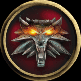 Witcher.Land WitcherLand - 基于极受欢迎的系列小说的浏览器游戏 - 巫师。炼金术是游戏的基本组成部分。你 - 杰洛特，将能够创造不同的灵药和药水，试图领先于其他巫师，运用这
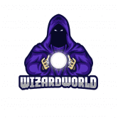 Wizard World games Wizard World 是一种代币，将用作游戏生态系统的桥梁和治理。它包括一个新的游戏平台，能够使用内部货币赚取真钱，NFT 收藏卡的输出能够在我们的游戏平台中使
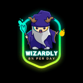 Wizardly Wizardly 是 CRONOS 链上主题丰富的 Token Miner。这是一个简单的智能合约，充当 $CRO 奖励池，只要奖励池中还有 $CRO，每天都会返回池中 8%* 的 $CRO！ 当用户积累更
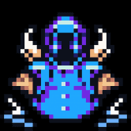 Wizards & Dragons Game 数以千计的巫师和龙在虚拟世界的一座塔中竞争。 GP 的诱人宝藏等待着您，赌注极高。所有元数据和图像都是 100% 在链上生成和存储的。没有 IPFS。没有 AP
WIZZ NETWORK IO WIZZ NETWORK - 提供加密聊天信使和数据存储。赌徒战争游戏和 DEX。 WIZZ 也是一个备用 BP 和代理，可以使用您的支持。今天访问我们。开启你的 WIZZ！WIZZ NETWORK
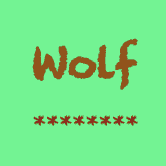 Wolf Game for Solana 第 1 到 10000 个 NFT 的铸币费为 1 SOL。 第 10001 到 20000 个 NFT 的铸币费为 20000 Fleece 代币。 第 20001 到第 30000 个 NFT 的铸币费为 30000 Fleece 代币。 第 90001 到第 100000 个 NFT 的铸币费为 100000 Fleece 代币，永久铸币
Wolfpackspace Wolf-Pack：由 Wolf-Pack 合约和流动性池提供支持的币安智能链上的链上期权交易协议。 Wolf-Pack 是 Wolf-Pack 合约的无信任创建、维护和结算协议。 Wolf-Pack 合约是一种类似于期
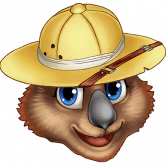 Wombat Dungeon Master 多链 NFT 质押 在 EOS 和 WAX 上通过 Uplift、Womplay、.gems、Crypto Writer 等知名 NFT 收藏获得奖励！ 漫长的季节 没有冲刺或比赛的奖励。以自己
Women and Weapons Women and Weapons 汇集了 10,000 名多样、美丽和糟糕的女性 NFT。构成这些资产的 200 多个属性由著名艺术家 Sara Baumann （又名“Sparky”）精心手绘。每一次中风都是爱的劳
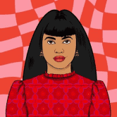 WomenRise 我们专注于通过 NFT 和 Web 3.0 促进妇女权利和女童教育。我们的最终目标是为全球 2.58 亿无法接受教育的儿童建造虚拟世界中的第一所学校。其中1.29亿是女孩。